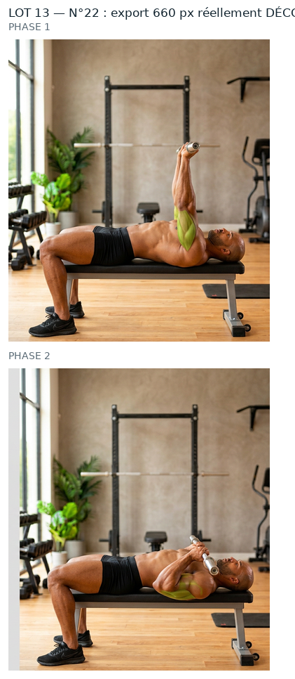
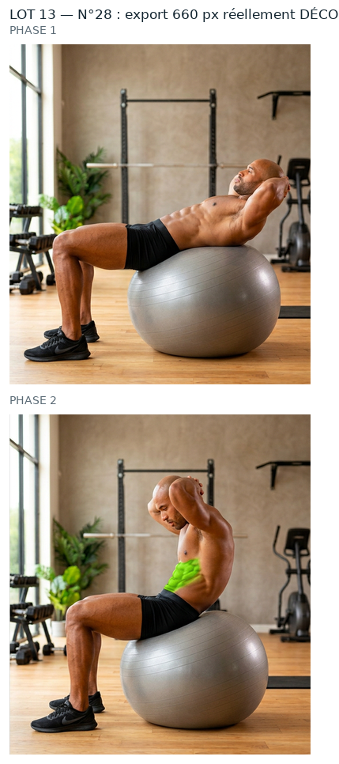
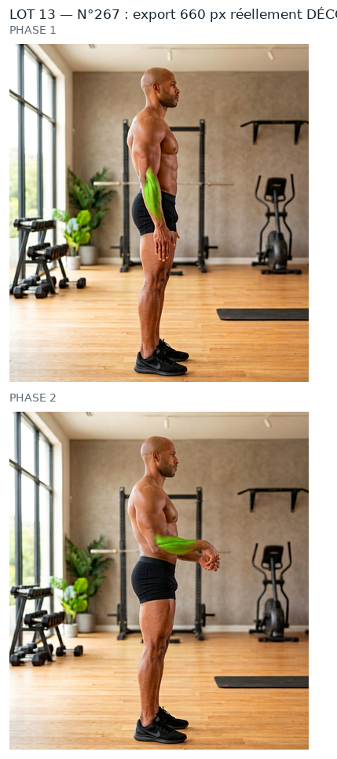
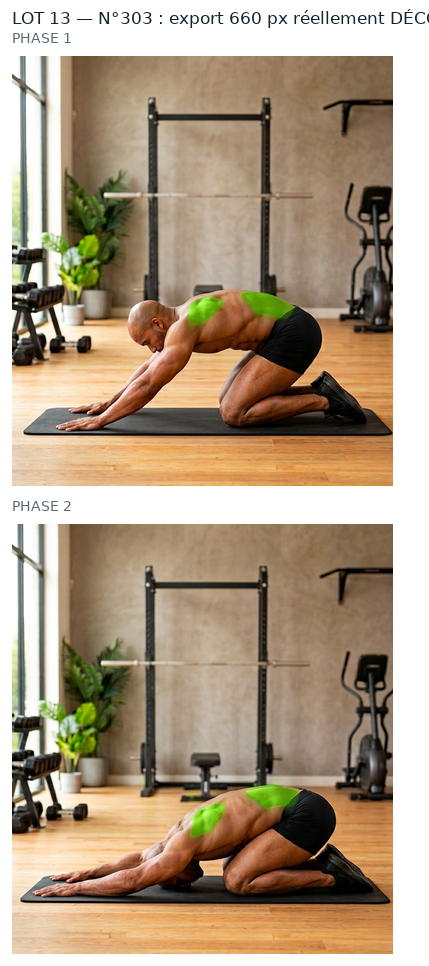

Mêmes règles que le n°44 et les lots précédents que tu as validés : source PNG native, aucun agrandissement, retouche à la résolution de la source, vert ramené dans la famille du n°260, puis WebP animé 660 px (+ GIF de secours). Rien n'est intégré : aucun GIF livré remplacé, APK intact, 0 image générée.
Meilleure couverture du lot (50-70 %). Debordement 27 % en phase 2 : notre vert deborde un peu de ce que le GIF livre couvrait. Le manque sur peau est le plus haut du lot (17 %) : a regarder.
contour large : 8.01 px de transition sur la phase 1 (3 à 6 px sur les numéros les plus nets) — le bord du vert y est plus doux
Le vert du GIF livre couvrait 3 fois plus large que le notre : notre planche a un coeur vert franc entoure d'un halo degrade. Nous couvrons le coeur (33 a 52 %). Le manque tombe surtout sur du vert pale deja present (44-61 %), tres peu sur la peau (2-7 %).
teinte de la source à 79.3°, éloignée des 86,3° du n°260 — la couleur de départ est différente
Ces planches montrent ce que contient réellement le WebP et le GIF de repli (fichiers rouverts image par image), pas le PNG de travail.

n°22 — WebP + GIF décodés

n°28 — WebP + GIF décodés

n°267 — WebP + GIF décodés

n°303 — WebP + GIF décodés
Ce qui reste écarté
n°1, 9, 10 : vert = feuillage du décor (décision du 01/10/2026).
n°218, 235, 239 : planche annoncée ≠ GIF livré (47 à 80/255) — chantier à part.
34 numéros « femme » sans source native (210, 224-259, 274-276, 289-330) : aucune source, donc hors de cette méthode.
Limites (inchangées)
Le GIF reste limité à 256 couleurs par image : c'est le WebP qui porte la qualité.
Au-delà de 660 px d'export on n'ajoute aucun détail, seulement du poids.
Les ROI sont dérivées de la tache verte mesurée dans le GIF livré, pas posées à l'œil (pas de vision dans cette session) : à confirmer visuellement.
Dis-moi, numéro par numéro : « 22 OK » · « 28 OK » · « 267 OK » · « 303 OK » — ou ce qui cloche (teinte, contour, zone mal placée…). Rien ne sera intégré et aucun GIF livré ne sera remplacé avant ton accord.
Contrôles chiffrés
ROI, seuils, percentiles, poids, PSNR et garantie « aucun pixel modifié hors zone » : evolution/media/refonte-photo/hd-2026-09-30/lot13/CONTROLES.json